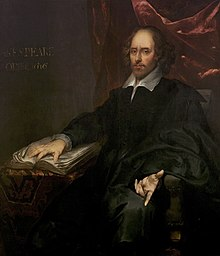
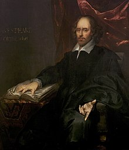
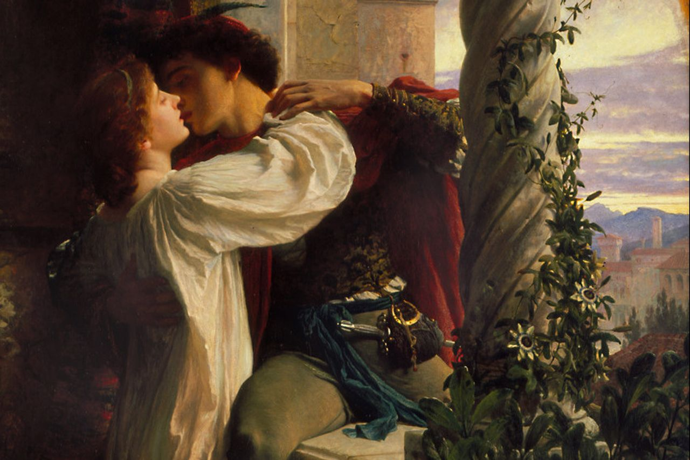
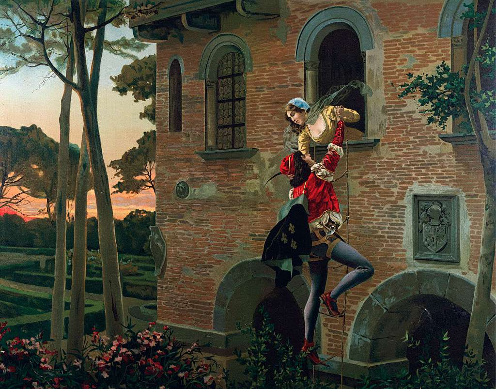
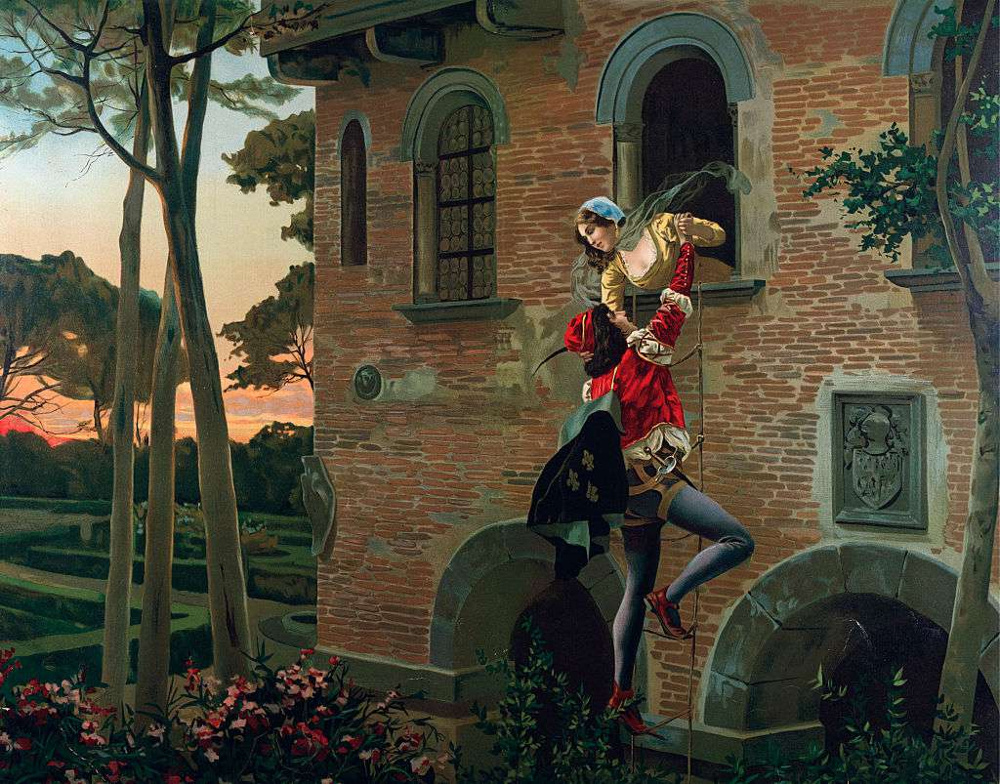

- General Informaition:
- Early life:
Shakespeare was the son of John Shakespeare, an alderman and a successful glover (glove-maker) originally from Snitterfield in Warwickshire, and Mary Arden, the daughter of an affluent landowning family. He was born in Stratford-upon-Avon, where he was baptised on 26 April 1564. His date of birth is unknown, but is traditionally observed on 23 April, Saint George's Day. This date, which can be traced to William Oldys and George Steevens, has proved appealing to biographers because Shakespeare died on the same date in 1616. He was the third of eight children, and the eldest surviving son. Although no attendance records for the period survive, most biographers agree that Shakespeare was probably educated at the King's New School in Stratford, a free school chartered in 1553, about a quarter-mile (400 m) from his home.
At the age of 18, Shakespeare married 26-year-old Anne Hathaway. The consistory court of the Diocese of Worcester issued a marriage licence on 27 November 1582. The next day, two of Hathaway's neighbours posted bonds guaranteeing that no lawful claims impeded the marriage. And six months after the marriage Anne gave birth to a daughter, Susanna, baptised 26 May 1583. Twins, son Hamnet and daughter Judith, followed almost two years later and were baptised 2 February 1585. Hamnet died of unknown causes at the age of 11 and was buried 11 August 1596.
- London and theatrical career:
It is not known definitively when Shakespeare began writing, but contemporary allusions and records of performances show that several of his plays were on the London stage by 1592. In 1599, a partnership of members of the company built their own theatre on the south bank of the River Thames, which they named the Globe. In 1608, the partnership also took over the Blackfriars indoor theatre. Extant records of Shakespeare's property purchases and investments indicate that his association with the company made him a wealthy man, and in 1597, he bought the second-largest house in Stratford, New Place, and in 1605, invested in a share of the parish tithes in Stratford.
- Later years and death:
Shakespeare died on 23 April 1616, at the age of 52. He died within a month of signing his will, a document which he begins by describing himself as being in "perfect health". No extant contemporary source explains how or why he died. Half a century later, John Ward, the vicar of Stratford, wrote in his notebook: "Shakespeare, Drayton, and Ben Jonson had a merry meeting and, it seems, drank too hard, for Shakespeare died of a fever there contracted", not an impossible scenario since Shakespeare knew Jonson and Drayton. Of the tributes from fellow authors, one refers to his relatively sudden death: "We wondered, Shakespeare, that thou went'st so soon / From the world's stage to the grave's tiring room."
- Plays:
In the late 19th century, Edward Dowden classified four of the late comedies as romances, and though many scholars prefer to call them tragicomedies, Dowden's term is often used. In 1896, Frederick S. Boas coined the term "problem plays" to describe four plays: All's Well That Ends Well, Measure for Measure, Troilus and Cressida, and Hamlet. "Dramas as singular in theme and temper cannot be strictly called comedies or tragedies", he wrote. "We may, therefore, borrow a convenient phrase from the theatre of today and class them together as Shakespeare's problem plays."The term, much debated and sometimes applied to other plays, remains in use, though Hamlet is definitively classed as a tragedy.
- Poems:
- Sonnets:
The 1609 edition was dedicated to a "Mr. W.H.", credited as "the only begetter" of the poems. It is not known whether this was written by Shakespeare himself or by the publisher, Thomas Thorpe, whose initials appear at the foot of the dedication page; nor is it known who Mr. W.H. was, despite numerous theories, or whether Shakespeare even authorised the publication.Critics praise the Sonnets as a profound meditation on the nature of love, sexual passion, procreation, death, and time.
Comedy works: |
|---|
Tragedy works: |
|---|
Romance works: |
|---|
 

Romeo and Juliet
 

Images from plays


You can also check some more informaition about William Shakespeare here: |
|---|
Something about the plays and theater: |
|---|
The most known work of William Shakespeare is his tragedy and romance play Romeo and Juliet. This theater play has also became a movie in 1996
Romeo and Juliet: |
|---|